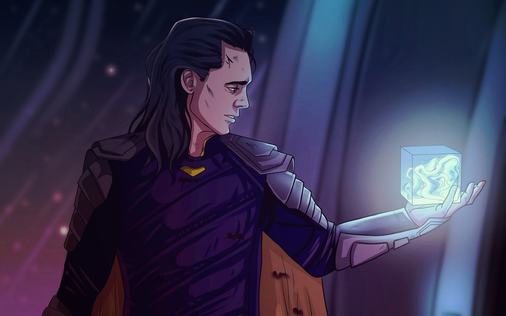
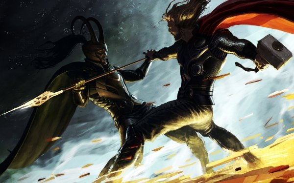

Loki is known as the trickster god and deity of mayhem and mischief in Norse mythology. He is one of the most well-known gods of Norse mythology. He is at least half-giant; however, some think he is full-giant but sneaked his way to becoming a god.

Family
Loki’s father was Fárbauti and his mother was Laufey. It is unknown whether his mother was a lesser known goddess or a giant, and his father definitely was a giant.
This duplicity may have attributed to Loki’s split feelings about the gods of Asgard. Sometimes he is helpful to them, but other times he insults them, causes trouble, and during Ragnarok leads the giants into battle against Asgard.
Symbols
Loki has been associated with mistletoe, two intertwined snakes, and also a helmet with two horns.
Powers & Duties
Loki had the power to shape-shift in Norse legends. In various stories, he turned into a salmon, mare, seal, fly, and elderly woman. He also used a combination of masterful trickery and cunning to achieve his objectives.
Stories
 The first time Loki helped the gods was when they were building Asgard. The gods had run out of funds and all they had built was a wall. Loki came up with the idea that a giant should finish the job for them. The gods agreed, as did the giant. But, the giant asked for the Sun, the Moon, and the goddess Freya as payment if he completed the job on time. The gods weren’t sure, but Loki assured them that the giant would never finish on time. The giant had a huge stallion called Svadilfari to help him, and the gods got nervous. Loki changed shape into a mare and seduced the giant’s horse. As a result of Loki’s trickery, the giant wasn’t able to finish on schedule and tried to kidnap Freya. Before the giant could, Thor cracked his skull with a hammer. However, Loki, as the female horse, got pregnant and gave birth to an eight-legged stallion named Sleipnir, which he gave to Odin.
Another time he helps the gods of Asgard is when Thor lost his hammer, Mjolnir. Thor asks Loki for help and they work together to find where the hammer is located. Thrymr, the giant, had stolen the weapon and taken it to the home of the giants. He would only return it if Freya would agree to marry him. Loki came up with a plan that included his and Thor’s cross-dressing to get the hammer back. It succeeded, and Thrymr was punished.
During a great feast in Asgard, Loki wasn’t invited and was upset. He asked the guard what the gods were talking about, and the guard told him they were talking about war, weapons, and saying negative things about Loki. Loki burst in, and the gods became silent. Loki then asks for a seat, and Odin finally agrees to let him sit. Loki gives a toast to all the gods except for Bragi, whom he insults instead. They start arguing and other gods and goddesses get involved.
Loki begins to insult them all, including Odin, and when Frigg, Odin’s wife, tries to stop Loki, he ends up insulting her as well. She tells Loki that if her son Baldur were still alive, Loki wouldn’t be able to escape the wrath of the gods. Loki then reminds her that he is responsible for Baldur’s death. The insults continue when Freya calls Loki mad – he retorts that she is a whore. Heimdall tells Loki he’s drunk and to stop, but Loki insults Heimdall. Skadi tells Loki to watch it or he’ll be bound up, and Loki insults her. Sif, the wife of Thor, gives him mead in a golden goblet saying she is blameless and he can’t insult her. Loki claims she is his lover. Thor finally arrives, threatens Loki to silence with Mjolmir, and Loki finally leaves after insulting Thor. He disguises himself as a salmon, but the gods find him and finally bind him until Ragnarok.
.jpg "LokiBound until Ragnarok")